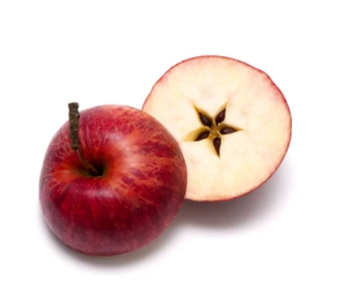

（来自上文）艺术家在:加工游戏素材时，往往在现实原型的基础上进行:修改、:模糊、:重组，或:取其形而去其神，或兼并多而为一，形成具有原型特点、风貌，却不同于原型的游戏内容。
下面是一个例子：
“国王卡布斯：游戏内文本为Qabus，明显对应了《王书》中的Kavus。
王子科巴德：游戏内为Qubad，与Seyavash不对应，但可能出自《王书》中Kavus的父亲——骁勇善战的Qobad。 既当儿子又当爹
师长贡达法：游戏内为Gundafar，人物应当对应Rostam，但名字暂未找到出处。
敌人法拉西亚：游戏内为Frasiyav，显然对应突朗王名Afrasyab。”
——nga用户@EternityDew对于《原神》中凯亚传说任务的考据
由于游戏内素材经过:再加工，许多内容在原型的基础上已经模糊，并且与游戏:原创内容相混合。这意味着，从游戏内呈现的有限内容出发，:追溯其在现实世界与诸多历史年代中的对应，是一个不一定有解的开放性问题。
即便如此，几乎每一篇考据文都会试图包含某种虚拟世界与现实世界一一对应的:列表，无论这样的对应是严丝合缝还是生搬硬套。
一般来说，考据党所追求的对应有文字上的对应与形态上的对应。文字上的对应寻找较容易，从游戏内文本，如地名、人名出发，:检索与之相关的历史文化内容。而形态上的对应，则需要一定的:门槛。成功找到形态对应的考据有两种情况，一是在该领域已经有一定的:知识基础，二是先通过文字检索缩小了范围，再恰好找到了:成功的匹配。
很多时候，历史文化的参考仅在设计的中间过程中起到提供灵感、提示风格的作用，最终呈现效果更像是受参考风格影响的原创作品，而非对参考的直接引用。
从有限的线索出发，发掘背后的真相——如果你是侦探游戏爱好者，一定对这样的过程不陌生。对于考据党而言，第一步要做的是假定ta的研究对象在现实中存在对应；第二步便是戴上手套，开动放大镜，拿着手中的碎片去寻找那个现实世界中的宝藏。
人人都能当考据党，但并不是人人都能当成功的考据党。
——至少一部分玩家是这么认为的。
没错，相当一部分考据党以这样的“学术规范”要求自己！
搜索是考据最常用的手段。由于所寻找信息的不确定性，大多数考据党无法仅靠自己的知识储备进行一次完整的考据。笔者对标注了:参考文献或信息来源的考据文进行了统计。统计结果显示，大部分考据文的主要信息来源可归类于以下四类：
搜索引擎的百科类页面，如百度百科、维基百科；
问答类论坛，如知乎、Quora；
具有科普性质的网络文章、期刊、书籍等出版物；
少量学术出版物。
与学术写作不同，游戏考据党们没有责任确保自己信息来源的准确性与规范性。相比之下，一篇考据文更像是一篇围绕着游戏主题的松散信息集合。
带有专业性质的考据文并不难找，因为它们往往很受欢迎。专业对口的作者不吝于在文章的开头就表明自己的:专业身份——这确立了观众们对考据内容质量的信任，引发了好学者们对一窥其他专业领域的:兴趣，而“专业”与游戏本身所附加的休闲娱乐性造成的反差也吸引了更多人的目光。
这何尝不是另外一种异域！
你会看到诸如《专业服装设计师点评游戏角色服装》《建筑史专业学生评价游戏建筑》这样的标题。
从“捕风捉影”到“按图索骥”，考据中寻找对应的过程本质上具有解谜性。与之相对应的游戏是连连看，或是拼图，或是考古学家从碎片中拼凑出一只瓷器——人类在相似中寻求满足的本性在此得到了验证。
“琐罗亚斯德教中有类似于“中庸”(moderation)的概念，要求人们在过度和不足之间寻求平衡。然而，这种中庸只适用于生活方式的选择，它并不意味着善恶的混淆。伦理与道德上的善恶是非判断，依然是必要的、清楚的、明确的。正确的选择和经过理性思考的决策被称为ratavo，它是智慧的标志和产物。随之而来的是善良的思想、言语和行为，这也就是琐罗亚斯德教中知名的三善原则(善思Humata，善言Hukhta，以及善行Huvarshta)。须弥人物的天赋培养材料：诤言、巧思、笃行，恰恰就是来自这三善原则。善良并非源于教条，而是扎根于智慧。”
——来自nga用户@Insbhxh对《原神》须弥设定中琐罗亚斯德教的考据
在看到最后一句话之前，你会认为这段话可能出现在一本介绍琐罗亚斯德教的书籍上。任何一篇考据文，都缺不了用大量篇幅描述游戏内容所对应的知识。事实上，当你打开任何一个玩家社群，搜索“考据”关键词，映入你眼帘的可能有历史、艺术、宗教、建筑、服装设计、政治、哲学、文学、地理、生物学……可以说，考据党的玩家群体有多庞大，考据产出的知识范围就越:宽广。
这些知识从何而来？
如果你的考据文的标题中不带有“专业”二字，那么，这些知识很可能是你临时学习来的。“现学现卖”是游戏考据中再常见不过的一种情境。有时候，考据者在分享知识的同时还会一并:分享自己学习的过程。
当然，也很有可能你对这一领域原本就有一定的兴趣与基本了解——这和你为了做考据而临时进行的学习并不冲突。或许你原本就有的基础知识，让你的搜索过程变得更加顺利便捷。
无论如何，考据的过程对于考据党而言是一种学习的契机。临时的学习或专业知识基础在考据者与观众之间制造了信息差。当考据党将他们获得的知识付诸纸端，当考据文在玩家社群中被阅读时，一种集体学习就产生了。
这样的学习属于在:最近发展区上进行的学习。考据者会尝试用:通俗易懂的语言对知识进行阐述，使内容更易于接受。这些知识碎片的难度介于常识与学术之间，能够被绝大多数愿意把文章读完的读者所理解。
然而，“最近发展区”是一片边界，而不是一个点。考据者如何决定从哪个角度去获取以及阐述这些知识呢？
苹果被切成两半。考据党A爱好文学，说这用典了打破固有观念的著名教育故事。考据党B爱好历史，说历史上牛顿其实不曾被苹果砸中过。考据党C爱好数学，说等角的五角星实际上蕴含着黄金分割比。
游戏由图像、文字、声音等多种媒介构成，而游戏文化要素的高度多样化、碎片化导致考据的角度可以迥然相异。当游戏内容引发考据党的联想时，联想的首要方向是自己已经有爱好的:方向。
换句话说，考据的内容不是由游戏内容决定的，而是由考据者决定的。考据党在游戏提供的文化碎片中，捡拾对自己而言出众之物，并为它们填充丰富的内涵。考据的过程，是对自己的爱好与归属感的再次确认。
当然，我们也能观察到，为大众认识度最高的历史、考古文博、语言类学科，在考据文中占了大多数。
现代高等教育专业化的倾向，将成年人划分入不同的专业领域。
无论一个人对自己专业的喜爱程度如何，专业教育都在一定程度上带来了某种归属感，如某某专业的人常以“某某人”自称。
例如，nga用户在一篇以数学为主题（这样的主题十分稀有）的考据文开头说：
作为一名大四数学人，这次的数学主题令我感到非常惊喜……
此外，对于某些领域的:爱好也能带来归属感，如一些苏联文化爱好者自称为“精苏人”（精神苏联人）、罗马文化爱好者自称为“精罗”等。玩家社群中，对于这样的“业余爱好”的欢呼，是一种对“杂学主义”（Dilettantism）的认同。
这种爱好意味着在主业之外为之投入时间、精力与情绪。
但是为了显示内容的可靠性，一些专业名词会被保留。一般来说，在参考文献的原文引用或作者较正式的阐述之后，会有几句以网络通俗用语为主的解释。
例如，说明自己所用的工具，如谷歌翻译、OCR文字识别等；
说明自己查找文献的过程，如看到某内容，就去找来了某本书/阅读了某篇文献这样的表述。
这些信息是考据者付出时间、精力的确认，在知识价值的基础上，为考据文附加了劳动价值。很多时候，即使考据者没有说明查找资料的具体过程，观众也会默认考据者为之付出了努力。
尽管讨论的方向多种多样，考据文作为游戏衍生作品的一部分，和游戏的主题相关——你无法随便拿出一篇论文，便说这是一篇考据。
考据文的行文就像敲开一个个:果壳。这个知识点引出那个文化背景，那个文化背景又引出下一个历史背景……从游戏内容播下的一颗种子，向人类知识的大地延伸出不断分叉的根系。写到哪里为止？你该如何决定哪些内容是与游戏相关的，哪些内容是你的读者们需要知道的？
相关性的决定具有很大的:随意性。那些实际上与游戏本体已经无关的内容，考据党们称作“:补充知识”。一篇文章的内容可能仅涉及游戏与现实的对应为止，也有可能从游戏相关的主题出发，完全独立成一篇学术类文章（:看这个例子）。
此时的考据文已经带有了一定科普性质。因此，科普文写作的:动机在某种程度上也适用于考据文的写作。
这时的考据者多么像一个教师的角色！
考据文的写作有很大自由度，类似于杂谈类写作。相当一部分“拓展知识”的段落，单纯来自作者联想的、有兴致提起的内容。当然，秉承着科普的原则，作者也会根据自己的理解，决定补充哪些观众需要的背景知识。
传播知识，获得影响力，增加学科能见度，表达学科认同……
以下截图为nga用户@CorundumShard在《重返未来：1999》社区发布的一篇哲学考据文章的开头，全文见此处。文章长万字，对以柏拉图学派和毕达哥拉斯学派为代表的古典西方哲学作了大致介绍。该文章的起源是一个小游戏内叫“单子”的道具名称。
值得注意的是，该考据帖引用了其他的考据帖，在拓展之外进一步进行了拓展。这一现象不是个例。在考据党之间，存在类似“学术交流”的现象，即同一领域的学生与爱好者在知识层面进行讨论。
nga用户@EternityDew在考据文的最后写道：“最后，楼主想夸夸本次的邀约任务，很温馨，有回家的感觉。”b站账号@圣洛夫图书馆Official在剧情分析的中间打趣道：“看到这里，大伙应该也明白鸭鸭被骗得有多离谱了~(鸭傻钱多好骗速来)”
若是仅仅从知识的魅力来看，想要解释考据党为何愿意花费时间精力进行考据尚显不足。归根结底，考据的热情来源于对游戏角色本身的喜爱与对游戏内容的认可。
换而言之，考据也是一种:厨力的表现。
喜爱某种事物便希望了解更多——这是人之常情。你常常能见到一个角色的粉丝，对其背景故事了如指掌，也对其设计原型信手拈来。
因此，为考据帖点赞的观众中，不乏对考据帖主角或游戏活动同样喜爱的玩家。
即使对于对游戏内容本身无感的观众群体而言，他们也可能对考据帖表达支持。这是玩家社群内部对于“厨力”的认可。
“厨”是“厨房”的缩写。日语中“厨房”（日语：厨房／ちゅうぼう chūbō）音同“中坊”（日语：中坊／ちゅうぼう chūbō），即初中生，指那些行为约束力和思想都只有初中生水平的人，这类人的眼里没有其他作品，也不容许别人说自己最喜爱的作品或角色等一点不是。和厨（日语：厨／ちゅう chū）同音的中（日语：中／ちゅう chū）也指中毒。 厨的称呼在实际演变中逐渐中性化，变得也可指单纯喜欢某事物的人。近年来，由于厨之称在许多大圈子的滥用，其意义在许多场合下几乎等同于普通粉丝.
——摘自《萌娘百科》